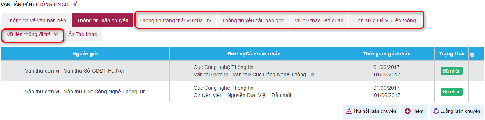

* Mục đích: xem các thông tin liên quan đến văn bản.
* Các thao tác:
- Tại màn hình xem thông tin chi tiết văn bản đến, người dùng chọn các tab thông tin để xem chi tiết

- Thông tin về văn bản đến: Các thông tin chính về văn bản đến, người dùng có thể kích chọn Xem chi tiết để xem các ý kiến xử lý văn bản (các ý kiến chỉ đạo của lãnh đạo, ý kiến xử lý văn bản của đơn vị/cá nhân tham gia).
- Thông tin luân chuyển: Xem trạng thái nhận văn bản của các đơn vị/cá nhân được luân chuyển văn bản.
- Hiện tab khác: Sau khi kích chọn mục này, người dùng sẽ truy cập các tab thông tin sau để xem thông tin liên quan văn bản:

- Thông tin trạng thái VB của đơn vị: xem trạng thái xử lý văn bản của đơn vị/cá nhân liên quan
- Thông tin yêu cầu bản gốc: danh sách các đơn vị/cá nhân yêu cầu văn bản gốc
- VB dự thảo liên quan: hiển thị văn bản trả lời nếu có (hiển thị khi người dùng dự thảo văn bản hoặc soạn văn bản đi và gắn liên kết với văn bản đến)
- Ẩn tab khác: Kích chọn để ẩn các tab thông tin này.